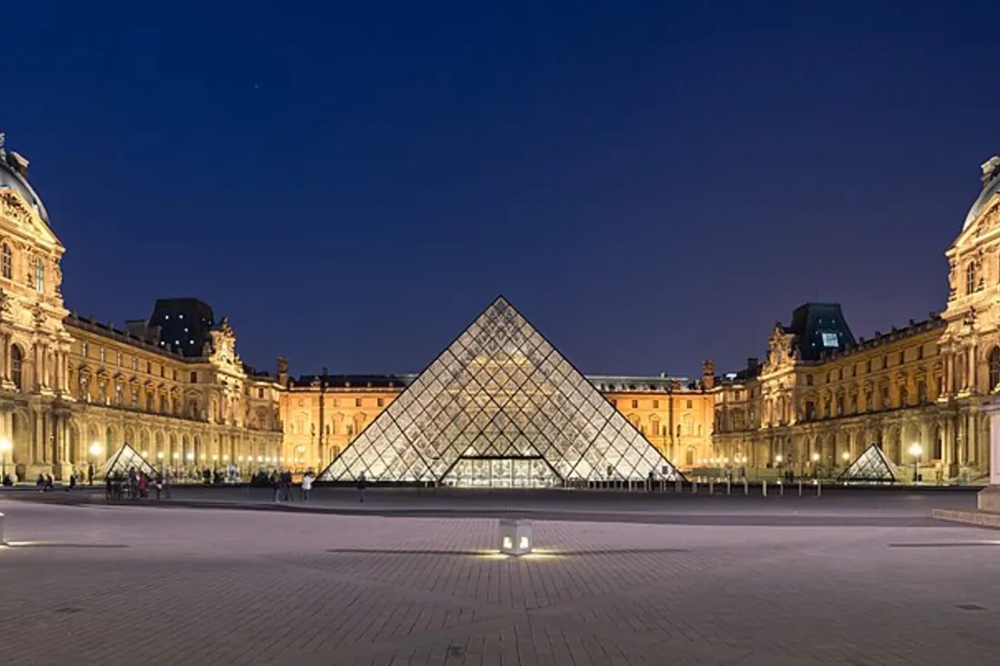
Лувр
Париж, Франция
Крупнейший и один из самых посещаемых музеев мира. Более 380 000 экспонатов, включая «Мону Лизу» да Винчи, «Венеру Милосскую» и «Нике Самофракийскую». Расположен в бывшей королевской резиденции.
Сайт музеяКолыбель мировой культуры — от Лувра до Рейксмузея

Крупнейший и один из самых посещаемых музеев мира. Более 380 000 экспонатов, включая «Мону Лизу» да Винчи, «Венеру Милосскую» и «Нике Самофракийскую». Расположен в бывшей королевской резиденции.
Сайт музея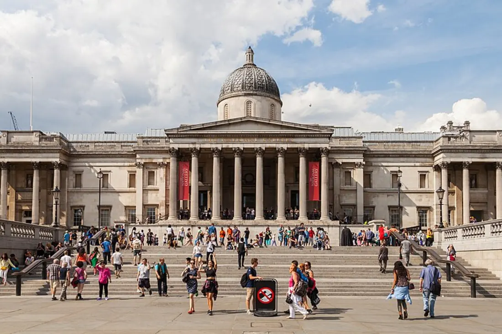
Одна из ведущих картинных галерей мира с коллекцией более 2300 европейских картин XIII–XX веков. Работы Боттичелли, Да Винчи, Тёрнера и Ван Гога. Бесплатный вход для всех посетителей.
Сайт музея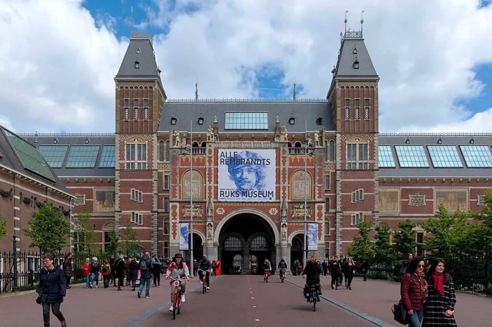
Национальный музей Нидерландов, основанный в 1800 году. Хранит шедевры Рембрандта, Вермеера и Франса Халса. Более 1 миллиона экспонатов, включая украшения, оружие и предметы декоративно-прикладного искусства.
Сайт музея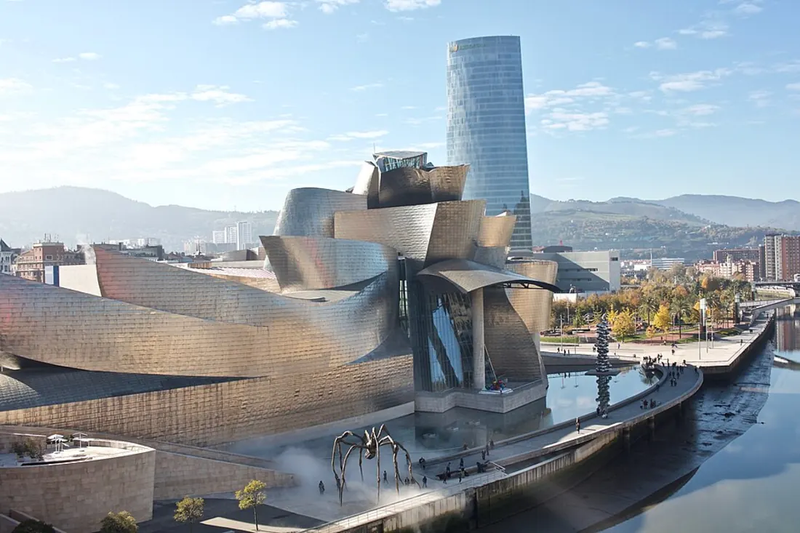
Филиал Музея Соломона Гуггенхайма, открывшийся в 1997 году. Здание спроектировано Фрэнком Гери и является шедевром деконструктивизма. Представляет искусство XX века и современность со всего мира.
Сайт музея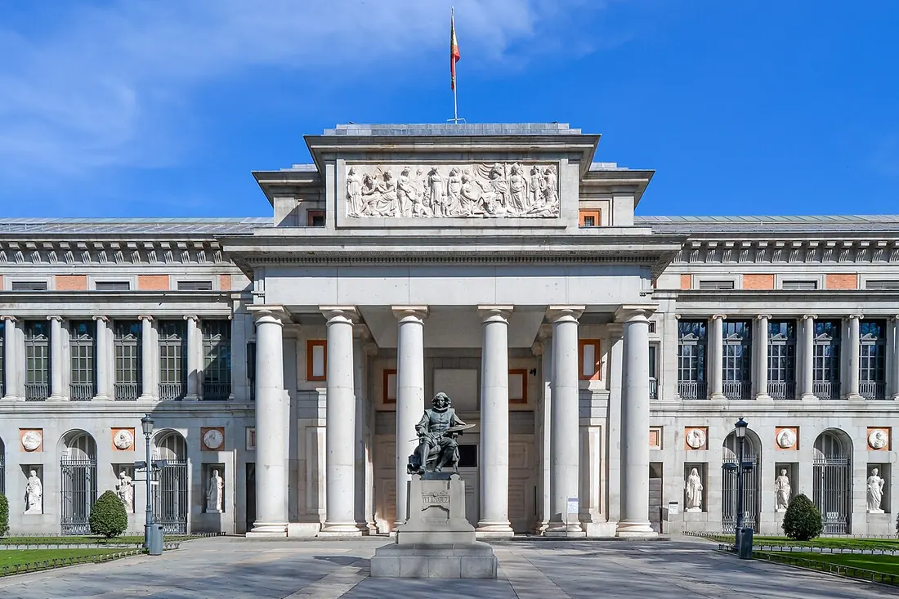
Главный художественный музей Испании, открытый в 1819 году. Собрание включает около 8000 картин и тысячи других произведений — шедевры Веласкеса, Гойи, Босха и Эль Греко.
Сайт музея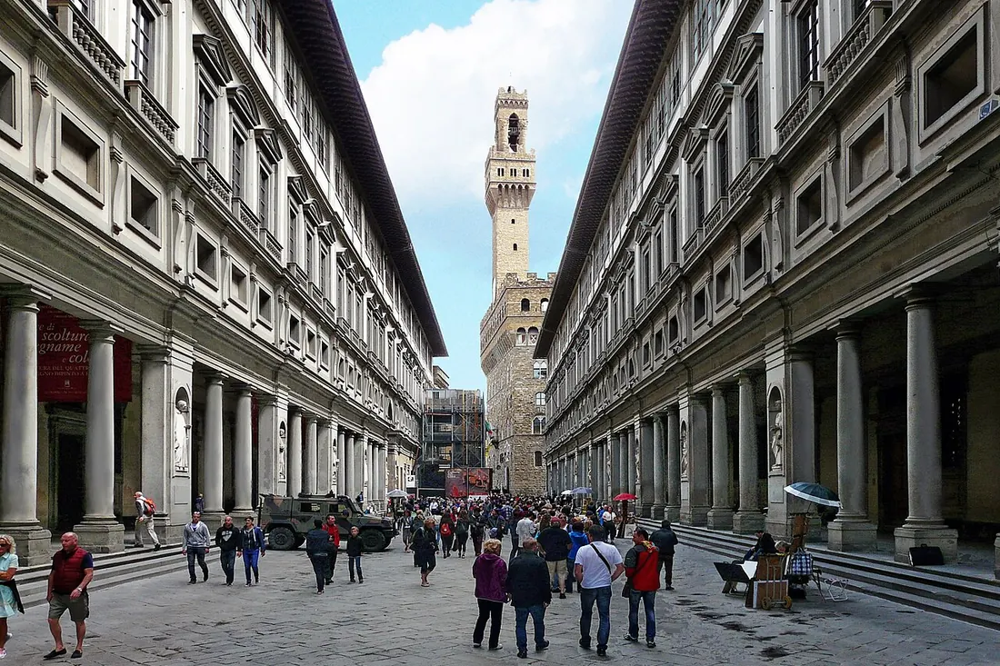
Одна из старейших галерей мира, размещённая в здании XVI века. Ядро коллекции — шедевры итальянского Возрождения: Боттичелли, Леонардо да Винчи, Микеланджело и Рафаэль.
Сайт музея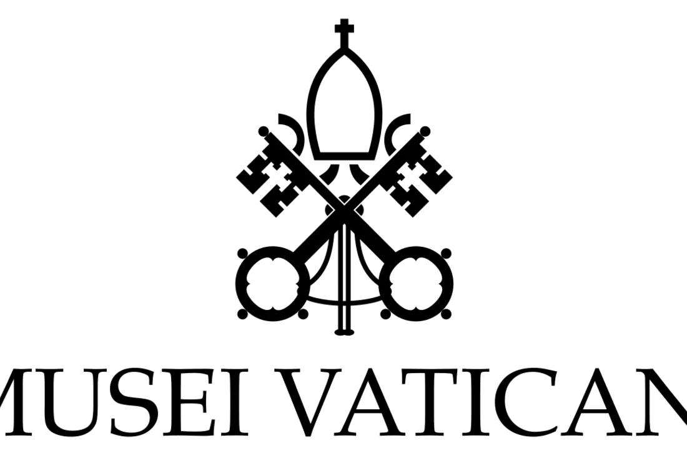
Комплекс музеев, основанных папой Юлием II в начале XVI века. Хранит колоссальное собрание искусства, включая фрески Сикстинской капеллы работы Микеланджело и станцы Рафаэля.
Сайт музея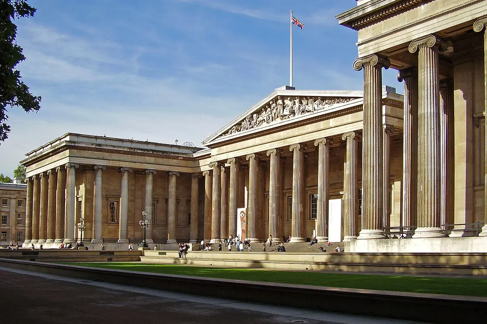
Один из первых публичных музеев мира, основанный в 1753 году. Более 8 миллионов предметов со всех континентов: Розеттский камень, древнеегипетские мумии, скульптуры Парфенона. Вход бесплатный.
Сайт музея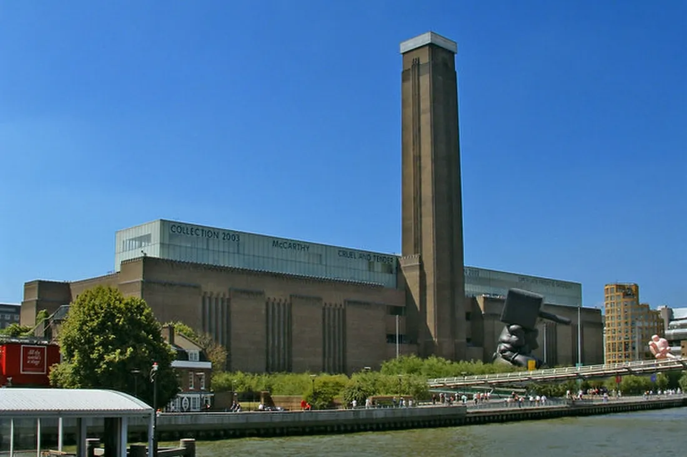
Галерея современного искусства в бывшей электростанции на берегу Темзы. Коллекция охватывает искусство от 1900 года до наших дней: Пикассо, Дали, Уорхол, Ротко. Постоянная экспозиция — бесплатно.
Сайт музея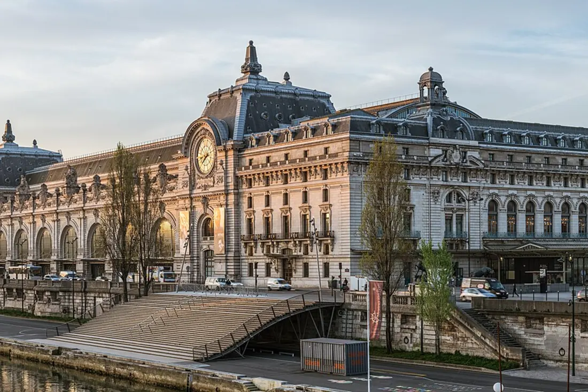
Размещён в здании бывшего вокзала Орсэ на левом берегу Сены. Крупнейшее в мире собрание импрессионистов и постимпрессионистов: Мане, Моне, Дега, Ренуар, Ван Гог, Сезанн — искусство 1848–1914 годов.
Сайт музея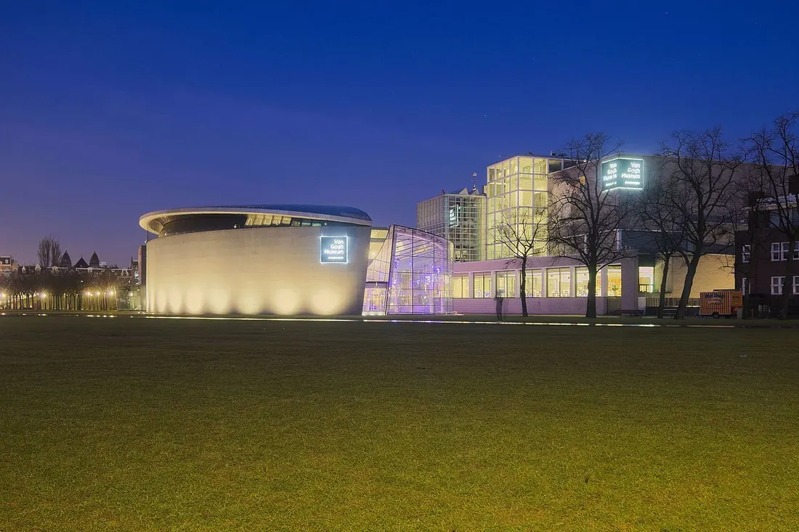
Хранит крупнейшую коллекцию работ художника: более 200 картин и 500 рисунков, включая «Подсолнухи», «Едоков картофеля» и «Ветку цветущего миндаля». Экспозиция рассказывает историю его жизни через этапы творчества.
Сайт музея